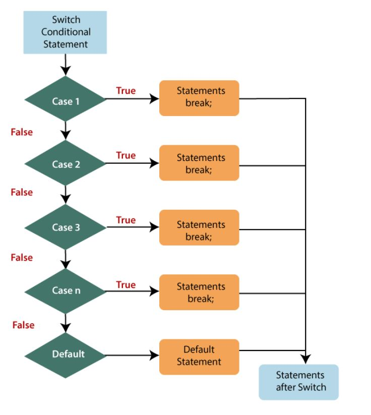

Decision-Making
conditional statements are used to perform different actions based on various conditions. The conditional statement evaluates a condition before the execution of instructions.
Types of Conditional Statements
if….else statement
if….else if….statement
switch statement
The if….else statement
An if….else statement includes two blocks that are if block and else block. It is the next form of the control statement, which allows the execution of JavaScript in a more controlled way. It is used when you require to check two different conditions and execute a different set of codes. The else statement is used for specifying the execution of a block of code if the condition is false.
Syntax
if (condition)
{
// block of code will execute if the condition is true
}
else
{
// block of code will execute if the condition is false
}

example
var x = 40, y=20;
if (x < y)
{
console.log("y is greater");
}
else
{
console.log("x is greater");
}
Output
x is greater
if….else if…..else statement
It is used to test multiple conditions. The if statement can have multiple or zero else if statements and they must be used before using the else statement. You should always be kept in mind that the else statement must come after the else if statements.
Syntax
if (condition1)
{
// block of code will execute if condition1 is true
}
else if (condition2)
{
// block of code will execute if the condition1 is false and condition2 is true
}
else
{
// block of code will execute if the condition1 is false and condition2 is false
}
Example
var a = 10, b = 20, c = 30;
if( a > b && a > c) {
console.log("a is greater");
} else if( b > a && b > c ) {
console.log("b is greater");
} else {
console.log("c is greater");
}
Output
c is greater
switch statement
It is a multi-way branch statement that is also used for decision-making purposes. In some cases, the switch statement is more convenient than if-else statements. It is mainly used when all branches depend upon the value of a single variable. It executes a block of code depending upon the different cases.
The switch statement uses the break or default keywords, but both of them are optional. Let us define these two keywords:
break: It is used within the switch statement for terminating the sequence of a statement. It is optional to use. If it gets omitted, then the execution will continue on each statement. When it is used, then it will stop the execution within the block.
default: It specifies some code to run when there is no case match. There can be only a single default keyword in a switch. It is also optional, but it is recommended to use it as it takes care of unexpected cases.
If the condition passed to switch doesn't match with any value in cases, then the statement under the default will get executed.
Syntax
switch(expression){
case value1:
//code to be executed;
break; //optional
case value2:
//code to be executed;
break; //optional
......
default:
code to be executed if all cases are not matched;
}

Example
var num = 5;
switch(num) {
case 0 : {
console.log("Sunday");
break;
}
case 1 : {
console.log("Monday");
break;
}
case 2 : {
console.log("Tuesday");
break;
}
case 3 : {
console.log("Wednesday");
break;
}
case 4 : {
console.log("Thursday");
break;
}
case 5 : {
console.log("Friday");
break;
}
case 6 : {
console.log("Saturday");
break;
}
default: {
console.log("Invalid choice");
break;
}
}
Output
Friday